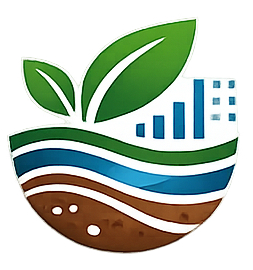

Acidez
pH baixo e alumínio podem prejudicar raízes e aproveitamento de nutrientes.

Laudo de solo explicado em linguagem simples.
Agrinho 2026
Uma ferramenta web para interpretar análise laboratorial de solo, explicar os principais indicadores e sugerir correções quando houver necessidade.
Interpretar laudo
O produtor tira uma foto do laudo de solo, e o sistema tenta ler automaticamente os valores principais, como pH, P, K, Ca, Mg, Al, CTC, V% e matéria orgânica.
Quando a leitura automática não encontra dados suficientes, o app usa OCR como reserva e permite corrigir o texto antes de gerar o parecer.
Com base em manuais de fertilidade, calagem e adubação, o sistema mostra um resumo simples e um relatório técnico para apoiar decisões no campo.
Autora
Anne Gabrieli Morais Reichert
Tema
Agro forte, futuro sustentável: equilíbrio entre produção e meio ambiente
Laudos de solo costumam ter muitos números e siglas. Para quem não tem prática, pode ser difícil entender o que precisa de atenção e o que fazer primeiro.
pH baixo e alumínio podem prejudicar raízes e aproveitamento de nutrientes.
Fósforo, potássio, cálcio e magnésio precisam ser avaliados com cuidado.
Ajuda na estrutura do solo, retenção de água e atividade biológica.
A dose depende dos dados do laudo, do PRNT e da recomendação regional.
Interpretar o solo ajuda a usar calcário e fertilizantes com mais cuidado, evitando desperdício e melhorando a produtividade com responsabilidade ambiental.
Recomendações só aparecem quando os dados indicam necessidade.
O sistema valoriza matéria orgânica, cobertura e manejo equilibrado.
O resumo simples ajuda produtores e estudantes a entenderem o laudo.
Ajuda a evitar aplicação sem necessidade.
Mostra pontos que podem limitar o desenvolvimento das culturas.
Apoia o equilíbrio entre produção, solo saudável e meio ambiente.
Sim. O app tenta ler automaticamente com IA e, se necessário, usa OCR como reserva. Antes da análise final, você pode revisar e corrigir o texto reconhecido.
Sim. Atualmente, a leitura e o processamento do laudo dependem de conexão com a internet.
Não. O sistema ajuda a entender o laudo, mas a recomendação final depende da cultura, da área e da orientação técnica local.